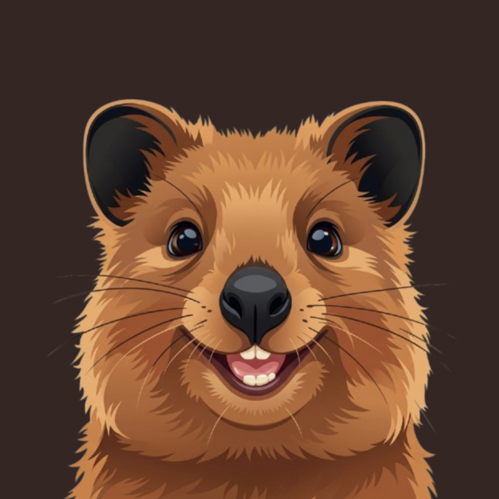

Quokka's compiler is written entirely in Quokka — and it cryptographically verifies its own bootstrap on every build.
Strictly self-hosted. The lexer, parser, and evaluator are written in Quokka itself — verified by quokka check-self, not just claimed.
No exceptions. No undefined behavior. Result and match, all the way down.
let means it. Mutation and shadowing are opt-in, not default.
Custom GUI installer, automatic .qk file association, and a VS Code syntax-highlighting extension out of the box.
A minimal C bootstrap (~2,150 lines) boots Stage 0, which runs the canonical Stage 1 interpreter written in Quokka. quokka check-self re-bootstraps through multiple stages and asserts cryptographic hashes match.
Fine-tune Llama-3 with LoRA in a few lines, via Unsloth — orchestrated through a secure, isolated process boundary. Joey currently transpiles and orchestrates via a Python backend. Python is never embedded in the Quokka core, but spawned as a separate process (a fully native runtime is in progress).
Download Quokka-Setup.exe from GitHub Releases.
Run the Windows installer to set up paths and file associations.
Run quokka run hello.qk in your terminal.